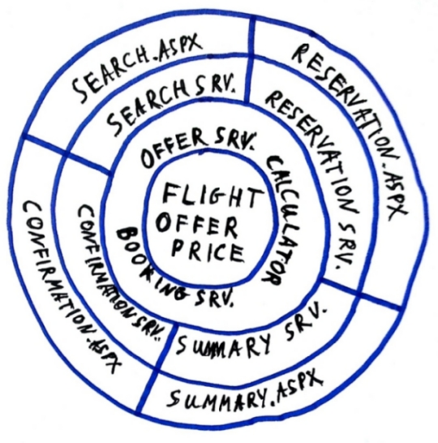

Ciekawostka - long life systems.
Czy wiecie że niektóre systemy żyją dłużej niż pół roku?
Nasza aplikacja
-
Od 5 lat nieprzerwanie na PRD,
-
podstawowy booking engine dla 60 agencji turystcznych,
-
44,000 linii produkcyjnego kodu w C#,
-
18,000 linii produkcyjnego kodu w Javascript,
-
1,200 testow,
-
40 releasow,
-
integruje około 4 wewnętrznych i 6 zewnętrznych podsystemów.
Pamiętacie Boba?

Architektura ewoluuje
Dobra architektura to nie tylko dobry projekt. Dobry projekt to dopiero początek o architekturze trzba myśleć cały czas.

Architektura ewoluuje
Dobry system można łatwo zepsuć.

Architektura ewoluuje
Słaby system można przywrócić do życia.

Co zastaliśmy.
-
najbliżej do transaction script pattern,
-
brak separacji logiki i infrastruktury,
-
brak świadomego zarządzania zależnościami,
-
duża ilość duplikacji kodu,
-
javascript, którego każdy się bał (jeden wielki antypattern),
Jednym zdaniem
Kruchość + brak testów = katastrofa!
Co Nas skłoniło do zmian.
-
Bardzo niska niezawodność systemu.
Issue list potrafiła osiągać kilkaset pozycji w miesiącu.
-
Bardzo dlugo trwające update na PRD.
Niekiedy nawet cały dzień :), bez powodzenia.
-
Brak jakichkolwiek buildów
Systemu nikt nie potrafi uruchomić
-
Perspektywa paru lat utrzymania.
System przypominał maratończyka po maratonie kiedy ciągle miał sporo trasy przed sobą.
-
Potrzeba ciąglej rozbudowy.
Ciągle pojawiały się nowe requesty od klienta i nowi klienci.
Pierwsze kroki.
-
pierwsze testy jednostkowe,
-
sprzątanie nieużywanego kodu,
-
eliminacja duplikatów,
-
grupowanie powiązanych zagadnień,
-
świadome próby izolacji, separacji,
-
pierwszy konatak z istniejącymi javscript’ami.
Rzeczy nabierają właściwych kształtów.

Composite i MVP pattern w Javascript.

Composite i MVP pattern w Javascript.
Każdy element HTML może być częścią większej całość - doskonały przykład na composite pattern.
Każdy element pełni zarazem odmienną funkcję a jenoczśnie zbudowany jest podobnych części:
- mamy część odpowiedzialną za HTML - View,
- mamy część odpowiedzialną za dane - Model,
- mamy część za logike UI - Presenter.
Przyczym dość ważne jest aby że Model nic nie wiem o Presenterze i View.
Każdy element może istnieć niezależnie.
Loosly Coopling & Dependency Injection
- testy jednostkowe mocno wyartykuowały odwieczną potrzebę systemu
- centralny punkt zarządzania zeleżnościami - niekoniecznie framework DI
- mocny nacisk na separowanie się od zewnętrznych komponentów
Domain Driven Design
- większy nacisk na domenę niż infrastrukturę
- nie walczymy z rzeczywistością
- system zgodny z domeną łatwiej dostosowuje się do zmieniających wymagań
Zaczyna rysować się architektura
- zastasowane wzorce i praktyki zaczęły formowac całościową architekturę systemu
- dodatkowo w warstwie front-end pojawiają się kolejne czynniki
- szybki rozwój i zmiany używanych bibliotek
- globalna zmiana podejścia do javascriptów i wypracowywanie coraz lepszy wzorców
- request od klientów
- dotychczasowy model MVP robi się za mały - pojawiają się nowe warstwy
Gdzie jesteśmy

Cebula o smaku backendu.

Cebula front-end’owa

/
#